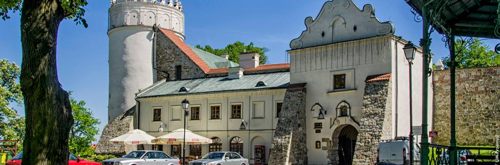

Powrót do strony głównej

Zamek wzniesiony po 1340 roku przez króla Kazimierza Wielkiego na górującym nad miastem Wzgórzu Zamkowym na miejscu starszego grodu.
Na zamkowym dziedzińcu są eksponowane relikty rotundy i palatium - budowli z okresu panowania Bolesława Chrobrego.
Zamek gruntowanie przebudowany w XVI wieku w stylu renesansowym mieści w swoich murach m.in. salę teatralną,
Towarzystwa Dramatycznego im. Aleksandra Fredry - najstarszego w Polsce teatru amatorskiego.
W sąsiedztwie zamku warto odwiedzić pięknie położony Park Zamkowy, którego początki sięgają 1842 roku.
Recenzja miejsca